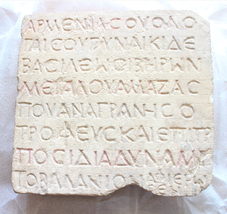

არმაზციხე-ბაგინეთი. ამაზასპეს მეუღლის წარწერაArmaztsikhe - Bagineti. Inscription of Amazaspe’s Wife
არმაზციხე-ბაგინეთი. ამაზასპეს მეუღლის წარწერა
Armaztsikhe - Bagineti. Inscription of Amazaspe’s Wife
შინაარსი / Summary
შეწირვითი Donating
ბიბლიოგრაფია Bibliography
კრიტიკული გამოცემა Interpretive Edition
დიპლომატიური გამოცემა Diplomatic Edition
ΓΑΙΣΟΥ ΓΥΝΑΙΚΙ ΔΕ
ΒΑΣΙΛΕΩΣ ΙΒΗΡΩΝ
ΜΕΓΑΛΟΥ ΑΜΑΖΑΣ
5ΠΟΥ ΑΝΑΓΡΑ ΝΗΣ Ο
ΤΡΟΦΕΥΣ ΚΑΙ ΕΠΙΤΡ Ο
ΠΟΣ ΙΔΙΑ ΔΥΝΑΜ ΕΙ Ι
ΤΟ ΒΑΛΑΝ ΕΙ ΙΟΝ ΑΦΙΕΡΩΣΕΝ

Plaque from Armaztsikhe-Bagineti, 1996
{'ka': '...(ქალის სახელი) არმენიის (მეფის), ვოლოგეზეს (ასულს), ხოლო იბერთა დიდი მეფის, ამაზასპეს მეუღლეს, ანაგრანესმა, მამამძუძემ და ეზოსმოძღვარმა,\n საკუთარი სახსრით გაკეთებული აბანო შესწირა.', 'en': '… (To the daughter of) (King) of Armenia Vologese... (the name of the woman) and to the spouse of the great King of Iberia, Amazaspe,\n from the Chief-of-the-Court and governor who built this bath with his own expenses and dedicated it to her.'}
{'ka': 'წარწერა არის შეწირვითი ხასიათის. შესრულებულია სალიტერატურო ენის - კოინეს ნორმების მიხედვით.\n თითო სტრიქონში არის 13-15 ასო, გარდა მერვე სტრიქონისა, სადაც 10 ასოს შემდეგ უფრო წვრილი ხელით ორ სტრიქონად მიწერილია მთელი სიტყვა\n (ზემოთ 6 ასო, ქვემოთ 3), ასევე მთავრულით და იმავე მოხაზულობით, რომლითაცაა შესრულებული მთელი წარწერა. ასოებზე შესამჩნევია წითელი ფერის საღებავი.\n დაწერილობა επιτρπος არის lapsus calami და არა შემსრულებლის უმეცრება. არის იტაციზმის ორი შემთხვევა: δυναμι (=δυνάμει) და βαλανιον (=βαλανεῖον).\n მართალია ქვის ოთხივე წიბო კარგადაა დამუშავებული და არც დაზიანებულია, მაგრამ მოღწეული წარწერა აშკარად არის გაგრძელება, ალბათ, ასევე კარგად დამუშავებულ ფილაზე დაწყებული წარწერისა.\n დათარიღება: ისტორიული პირების მოხსენიების საფუძველზე დევიდ ბრაუნდი წარწერას III ს-ით ათარიღებს.', 'en': 'The inscription represents the act of donation. It is made in Koine. 13-15 letters in every line, except the eighth, where we meet two complete words additionally written after the 10th letter (6 letters on upper line , 3 on lower), these letters are also given in capital letters like the entire inscription. Red color is noticeable on the letters. επιτροπος is lapsus calami and does not represent the ignorance of the author. Two cases of itacism: δυναμι (=δυνάμει) and βαλανιον (=βαλανεῖον). Though all of the sides of the plaque are without any damage, it is apparent that the inscription is the continuation of something, some other inscription on another plaque.\n Date: on the basis of the historical names David Brown dates the inscription to the III century.'}
<div type="edition" xml:lang="ka" ana="mtavruli" xml:space="preserve">
<ab>
<lb n="1"/><w lemma="ქრისტე"><expan><abbr>ქ</abbr><ex>რისტ</ex><abbr>ე</abbr></expan></w>
<w lemma="განსუენება"><expan><abbr>გა</abbr><ex>ნ</ex><abbr>ო</abbr><ex>ჳ</ex><abbr>ს</abbr><ex>უ</ex><abbr>ენე</abbr></expan></w>
<w lemma="სულ">სოჳ<lb n="2" break="no"/>ლსა</w>
<name nymRef="ვაჩა">ვაჩაჲს<lb n="3" break="no"/>ასა</name>
<name nymRef="გურა"><expan><abbr>გო</abbr><ex>ჳ</ex><abbr>რაჲ<lb n="4" break="no"/>სასა</abbr></expan></name>
<name nymRef="მირა"><expan><abbr>მ</abbr><ex>ი</ex><abbr>რა</abbr><ex>ჲ</ex><abbr>ს</abbr><ex>ა</ex><abbr>ს</abbr><ex>ა</ex></expan></name>
</ab>
</div>